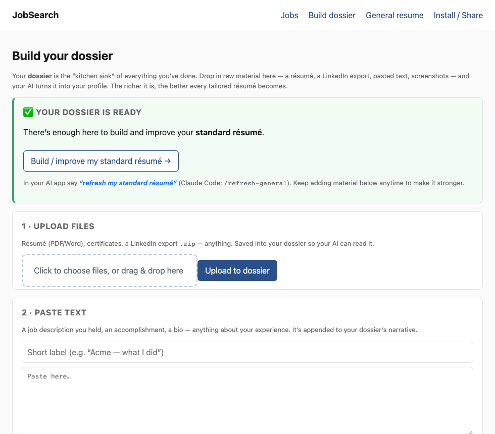
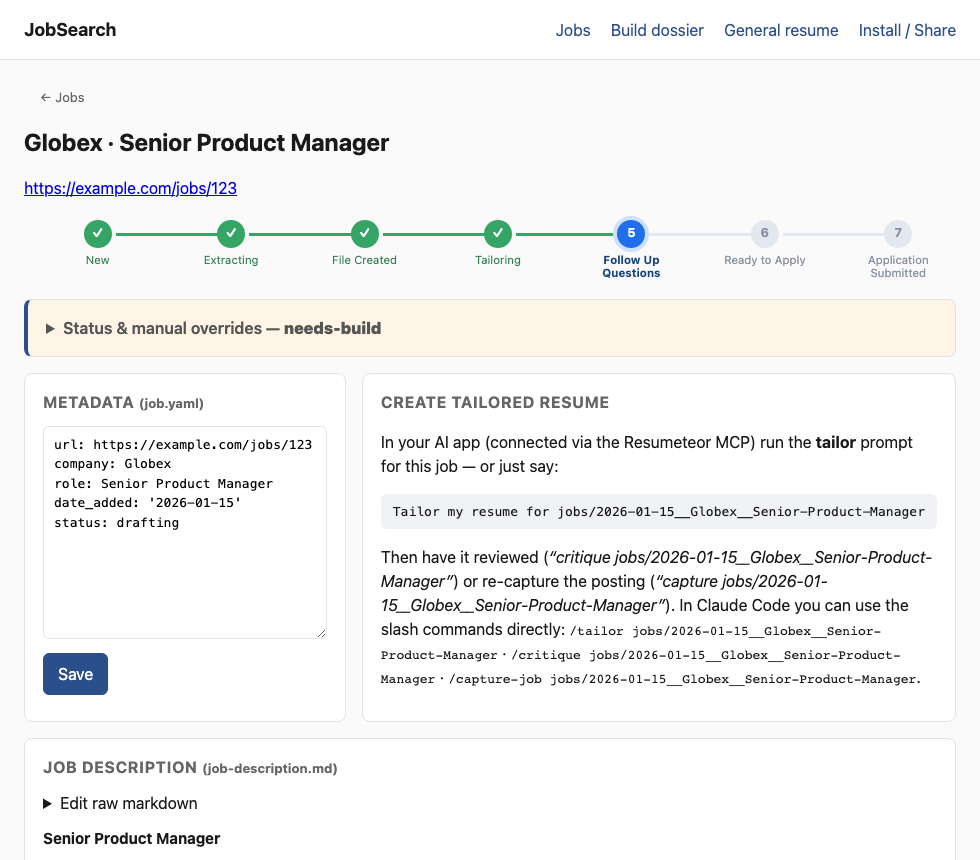
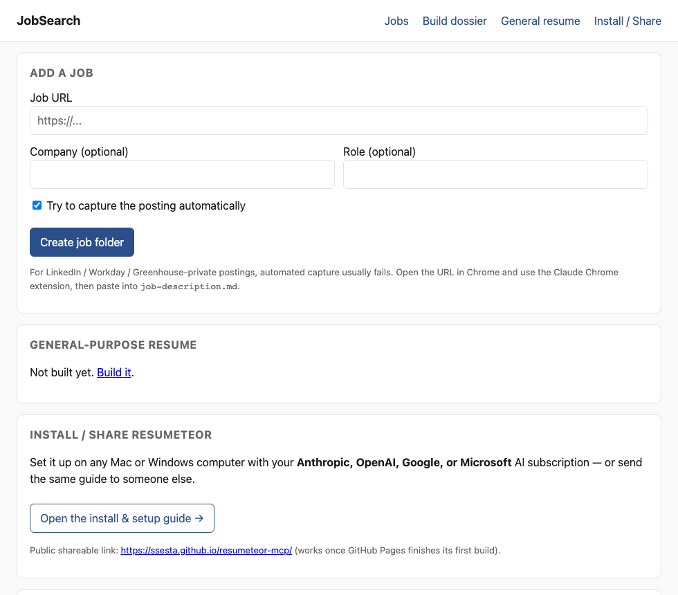

Two small pieces run on your own computer and work together: 🖥️ the app (your dashboard — add jobs, build your dossier, get Word/PDF files, track each application) and 🤖 your AI (does the actual writing — on your existing Anthropic, OpenAI, Google, or Microsoft subscription, no API key, no extra cost). Setup is three copy-pastes.
curl -LsSf https://astral.sh/uv/install.sh | sh
irm https://astral.sh/uv/install.ps1 | iex
Close the terminal and open a fresh one afterward.
Pick the AI app you use and do its one step. This lets it read & write your résumé files and do the tailoring on your subscription.
Settings → Developer → Edit Config, paste this (add the "resumeteor" block if
mcpServers already exists), save, and fully quit and reopen Claude.
{
"mcpServers": {
"resumeteor": {
"command": "uvx",
"args": ["--from", "git+https://github.com/ssesta/resumeteor-mcp", "resumeteor-mcp"]
}
}
}
claude mcp add resumeteor -- uvx --from git+https://github.com/ssesta/resumeteor-mcp resumeteor-mcp
One command in your terminal, then run codex and chat:
codex mcp add resumeteor -- uvx --from git+https://github.com/ssesta/resumeteor-mcp resumeteor-mcp
Open ~/.gemini/settings.json (create it if needed), paste this, save, run gemini:
{
"mcpServers": {
"resumeteor": {
"command": "uvx",
"args": ["--from", "git+https://github.com/ssesta/resumeteor-mcp", "resumeteor-mcp"]
}
}
}
Create .vscode/mcp.json in your project (the key is servers,
not mcpServers), then open Copilot Chat in Agent mode:
{
"servers": {
"resumeteor": {
"command": "uvx",
"args": ["--from", "git+https://github.com/ssesta/resumeteor-mcp", "resumeteor-mcp"]
}
}
}
In a terminal, paste this. It opens the app in your browser and keeps your files in a
Resumeteor folder in your home directory — the same place your AI uses.
uvx --from git+https://github.com/ssesta/resumeteor-mcp resumeteor-app
Leave that window open while you use it; it opens http://127.0.0.1:5050.
Build your dossier there — upload your résumé or LinkedIn export, paste text or screenshots. No files to hand-edit. It tells you when you’re ready to build your standard résumé.

The Build Dossier page.
tailor my résumé for the Globex job. It writes an honest tailored draft plus a few follow-up questions.

A job page — the progress bar updates as each application moves from New to Applied.

Your dashboard.
Prefer chat only? You can skip step 3 and use just your AI — the app simply makes managing
applications much easier.
Honest by design: it never invents experience, only reframes what’s truly yours.
Source & details: github.com/ssesta/resumeteor-mcp